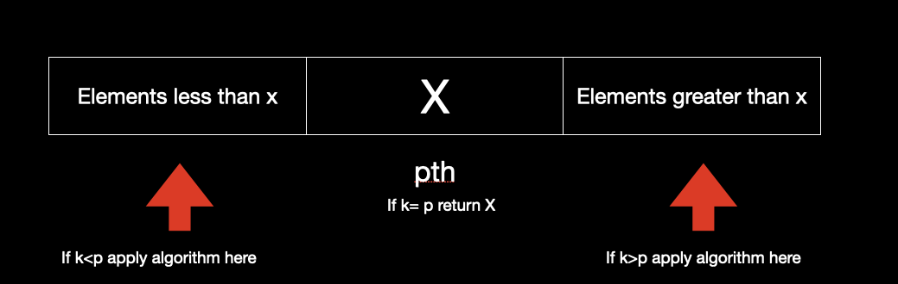

Median Finding Algorithm
In order to find the median , a naive approach could be to sort the elements and then pick the middle element of the array.
- Sorting the elements with an efficient algorithm will take O(NlogN)
- Finding the middle element will take O(1).
- The overall time complexity comes out to be O(NlogN)
Problem: Given a set of `n` unordered numbers, we want to find the `k^(th)` smallest number. (k is an integer between 1 and n). We will use Divide and Conquer strategy to solve this problem. This is called Median of median strategy. It is a deterministic linear-time selection algorithm.
Solution
- Divide the given elements into groups of 5 elements.
- Find the median of each 5-member group (can be done by sorting).
- At this stage we have `n/5` numbers that are medians of their respective groups.
- Now determine the median of these `n/5` medians and store it in a variable say `x`. This `x` is called the median of medians.
- Now use `x` as a pivot element and arrange the elements such that all elements less than `x` lie to its left whereas all elements greater than `x` lie to its right. Note : The elements to the left and right of `x` need not be sorted.
- If `x` lies at the `pth` position, then `x` is the pth smallest element in the given set of list.
-
Now, we wanted to find `kth` element. In order to do that compare `p` with `k` .If
- `k`=`p` , return x as the `k^(th)` element.
- `k`<`p`, apply this median of median algorithm to the elements less than `x`, i.e those that lie to the left of `x`.
- `k`>`p`, apply this median of median algorithm to the elements greater than `x`, i.e those that lie to the right of `x`.

Time Complexity Analysis
`T(n)<=T(n/5)+T((7n)/10)+O(n)`Reason for above expression : Assume that the list L of numbers contains n numbers, then there are n/5 medians . Now, assume that `p` is the median of medians there are n/10 medians less than `p`. Also, every median has two numbers less than itself . So, there are `(3n)/10` numbers less than `p` and in worst case the algorithm might recurse on remaining `(7n)/10` numbers. Time for dividing the list, finding medians and partitioning is `T(n)=T(n/5)+O(n)`.
For overall algorithm`T(n)=an+T(n/5)+T((7n)/10)`
We assume that `T(n)< C*n`
`T(n) = a*n + T (n/5) + T (7n/10)`
`C*n >= T(n/5) +T(7n/10) + a*n`
`C*n >= C*n/5+ C*7*n/10 + a*n`
`C >= 9*C/10 +a`
`C/10 >= a`
`C >= 10*a`
So, so `T (n) = O (n)`
The time complexity comes out to be `O(n)`
Why did we choose to make groups of 5 ?
- Finding the median of each group must not take a lot of running time. For this, we need to keep the size of each group fairly small.
-
If the size of each group is reducs to three, the median of medians would be both greater and smaller than approximately `n/3` elements.This will laed to `(2n)/3` recursions.
`T(n)=T(n/3)+T((2n)/3)+O(n)`
By master theorem, the complexity is O(nlogn). This is much slower than O(n) when groups had a size of 5 elements. -
For any recursion : `T(n)<=T(an)+T(bn)+cn`
If `a+b\<1` , it solves to O(n)
If `a+b\>1` , it solves to O(nlogn)
- Master Theorem